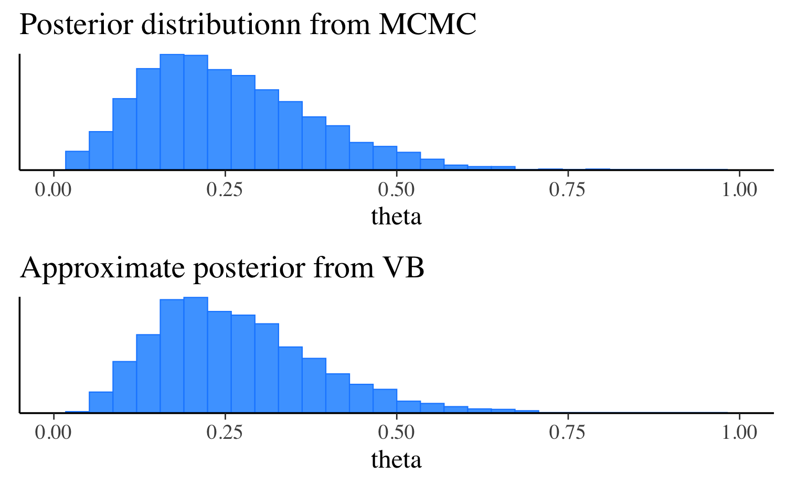

Getting started with CmdStanR
Jonah Gabry and Rok Češnovar
Source:vignettes/cmdstanr.Rmd
cmdstanr.RmdIntroduction
CmdStanR is a lightweight interface to Stan for R users (see CmdStanPy for Python) that provides an alternative to the traditional RStan interface. See the Comparison with RStan section later in this vignette for more details on how the two interfaces differ.
CmdStanR is not on CRAN yet, but the beta release can be installed via:
install.packages("cmdstanr", repos = c("https://mc-stan.org/r-packages/", getOption("repos")))
CmdStanR (the cmdstanr R package) can now be loaded like any other R package. We’ll also load the bayesplot and posterior packages.
library(cmdstanr) library(posterior) library(bayesplot) color_scheme_set("brightblue")
Installing CmdStan
CmdStanR requires a working installation of CmdStan, the shell interface to Stan. If you don’t have CmdStan installed you can install it yourself or use the install_cmdstan() function provided by CmdStanR.
install_cmdstan(cores = 2)
Before CmdStanR can be used it needs to know where the CmdStan installation is located. When the package is loaded it tries to help automate this to avoid having to manually set the path every session:
If the environment variable
"CMDSTAN"exists at load time then its value will be automatically set as the default path to CmdStan for the R session. This is useful if your CmdStan installation is not located in the default directory that would have been used byinstall_cmdstan()(see #2).If no environment variable is found when loaded but any directory in the form
".cmdstanr/cmdstan-[version]", for example".cmdstanr/cmdstan-2.23.0", exists in the user’s home directory (Sys.getenv("HOME"), not the current working directory) then the path to the cmdstan with the largest version number will be set as the path to CmdStan for the R session. This is the same as the default directory thatinstall_cmdstan()uses to install the latest version of CmdStan, so if that’s how you installed CmdStan you shouldn’t need to manually set the path to CmdStan when loading CmdStanR.
If neither of these applies (or you want to subsequently change the path) you can use the set_cmdstan_path() function:
set_cmdstan_path(PATH_TO_CMDSTAN)
To check the path to the CmdStan installation and the CmdStan version number you can use cmdstan_path() and cmdstan_version():
[1] "/Users/jgabry/.cmdstanr/cmdstan-2.24.0"[1] "2.24.0"Compiling a model
The cmdstan_model() function creates a new CmdStanModel object from a file containing a Stan program. Under the hood, CmdStan is called to translate a Stan program to C++ and create a compiled executable. Here we’ll use the example Stan program that comes with the CmdStan installation:
file <- file.path(cmdstan_path(), "examples", "bernoulli", "bernoulli.stan") mod <- cmdstan_model(file)
Model executable is up to date!The object mod is an R6 reference object of class CmdStanModel and behaves similarly to R’s reference class objects and those in object oriented programming languages. Methods are accessed using the $ operator. This design choice allows for CmdStanR and CmdStanPy to provide a similar user experience and share many implementation details.
The Stan program can be printed using the $print() method:
mod$print()
data {
int<lower=0> N;
int<lower=0,upper=1> y[N];
}
parameters {
real<lower=0,upper=1> theta;
}
model {
theta ~ beta(1,1); // uniform prior on interval 0,1
y ~ bernoulli(theta);
}The path to the compiled executable is returned by the $exe_file() method:
mod$exe_file()
[1] "/Users/jgabry/.cmdstanr/cmdstan-2.24.0/examples/bernoulli/bernoulli"Fitting a model
MCMC
The $sample() method for CmdStanModel objects runs Stan’s default MCMC algorithm. The data argument accepts a named list of R objects (like for RStan) or a path to a data file compatible with CmdStan (JSON or R dump).
# names correspond to the data block in the Stan program data_list <- list(N = 10, y = c(0,1,0,0,0,0,0,0,0,1)) fit <- mod$sample( data = data_list, seed = 123, chains = 4, parallel_chains = 2, refresh = 500 )
Running MCMC with 4 chains, at most 2 in parallel...
Chain 1 Iteration: 1 / 2000 [ 0%] (Warmup)
Chain 1 Iteration: 500 / 2000 [ 25%] (Warmup)
Chain 1 Iteration: 1000 / 2000 [ 50%] (Warmup)
Chain 1 Iteration: 1001 / 2000 [ 50%] (Sampling)
Chain 1 Iteration: 1500 / 2000 [ 75%] (Sampling)
Chain 1 Iteration: 2000 / 2000 [100%] (Sampling)
Chain 2 Iteration: 1 / 2000 [ 0%] (Warmup)
Chain 2 Iteration: 500 / 2000 [ 25%] (Warmup)
Chain 2 Iteration: 1000 / 2000 [ 50%] (Warmup)
Chain 2 Iteration: 1001 / 2000 [ 50%] (Sampling)
Chain 2 Iteration: 1500 / 2000 [ 75%] (Sampling)
Chain 2 Iteration: 2000 / 2000 [100%] (Sampling)
Chain 1 finished in 0.2 seconds.
Chain 2 finished in 0.2 seconds.
Chain 3 Iteration: 1 / 2000 [ 0%] (Warmup)
Chain 3 Iteration: 500 / 2000 [ 25%] (Warmup)
Chain 3 Iteration: 1000 / 2000 [ 50%] (Warmup)
Chain 3 Iteration: 1001 / 2000 [ 50%] (Sampling)
Chain 3 Iteration: 1500 / 2000 [ 75%] (Sampling)
Chain 3 Iteration: 2000 / 2000 [100%] (Sampling)
Chain 4 Iteration: 1 / 2000 [ 0%] (Warmup)
Chain 4 Iteration: 500 / 2000 [ 25%] (Warmup)
Chain 4 Iteration: 1000 / 2000 [ 50%] (Warmup)
Chain 4 Iteration: 1001 / 2000 [ 50%] (Sampling)
Chain 4 Iteration: 1500 / 2000 [ 75%] (Sampling)
Chain 4 Iteration: 2000 / 2000 [100%] (Sampling)
Chain 3 finished in 0.1 seconds.
Chain 4 finished in 0.1 seconds.
All 4 chains finished successfully.
Mean chain execution time: 0.2 seconds.
Total execution time: 0.4 seconds.There are many more arguments that can be passed to the $sample() method. For details follow this link to its separate documentation page:
The $sample() method creates R6 CmdStanMCMC objects, which have many associated methods. Below we will demonstrate some of the most important methods. For a full list, follow this link to the CmdStanMCMC documentation:
Posterior summary statistics
The $summary() method calls summarise_draws() from the posterior package:
fit$summary()
# A tibble: 2 x 10
variable mean median sd mad q5 q95 rhat ess_bulk ess_tail
<chr> <dbl> <dbl> <dbl> <dbl> <dbl> <dbl> <dbl> <dbl> <dbl>
1 lp__ -7.28 -6.99 0.764 0.328 -8.79 -6.75 1.00 1610. 1517.
2 theta 0.252 0.236 0.121 0.121 0.0804 0.476 1.00 1467. 1356.fit$summary("theta", "mean", "sd")
# A tibble: 1 x 3
variable mean sd
<chr> <dbl> <dbl>
1 theta 0.252 0.121# use a formula to summarize arbitrary functions, e.g. Pr(theta <= 0.5) fit$summary("theta", pr_lt_half = ~ mean(. <= 0.5))
# A tibble: 1 x 2
variable pr_lt_half
<chr> <dbl>
1 theta 0.965Posterior draws
The $draws() method can be used to extract the posterior draws as a 3-D array (iteration x chain x variable). The posterior package can then be used to easily convert to other formats, like data frames and matrices of draws.
# this is a draws_array object from the posterior package draws_array <- fit$draws() str(draws_array)
'draws_array' num [1:1000, 1:4, 1:2] -6.82 -7.32 -7.05 -7.13 -7.11 ...
- attr(*, "dimnames")=List of 3
..$ iteration: chr [1:1000] "1" "2" "3" "4" ...
..$ chain : chr [1:4] "1" "2" "3" "4"
..$ variable : chr [1:2] "lp__" "theta"# convert to matrix or data frame draws_df <- as_draws_df(draws_array) # as_draws_matrix() for matrix print(draws_df)
# A draws_df: 1000 iterations, 4 chains, and 2 variables
lp__ theta
1 -6.8 0.30
2 -7.3 0.13
3 -7.1 0.16
4 -7.1 0.37
5 -7.1 0.15
6 -7.5 0.12
7 -7.2 0.38
8 -6.8 0.22
9 -7.0 0.34
10 -6.8 0.22
# ... with 3990 more draws
# ... hidden meta-columns {'.chain', '.iteration', '.draw'}Plotting posterior distributions is as easy as passing the object returned by the $draws() method directly to plotting functions in bayesplot:

Sampler diagnostics
The $sampler_diagnostics() method extracts the values of the sampler parameters (treedepth__, divergent__, etc.) as a 3-D array (iteration x chain x variable):
# this is a draws_array object from the posterior package str(fit$sampler_diagnostics())
'draws_array' num [1:1000, 1:4, 1:6] 1 0.801 0.989 0.92 1 ...
- attr(*, "dimnames")=List of 3
..$ iteration: chr [1:1000] "1" "2" "3" "4" ...
..$ chain : chr [1:4] "1" "2" "3" "4"
..$ variable : chr [1:6] "accept_stat__" "stepsize__" "treedepth__" "n_leapfrog__" ...# convert to matrix or data frame using posterior package diagnostics_df <- as_draws_df(fit$sampler_diagnostics()) print(diagnostics_df)
# A draws_df: 1000 iterations, 4 chains, and 6 variables
accept_stat__ stepsize__ treedepth__ n_leapfrog__ divergent__ energy__
1 1.00 0.93 1 1 0 6.9
2 0.80 0.93 1 3 0 8.1
3 0.99 0.93 2 3 0 7.5
4 0.92 0.93 1 3 0 8.1
5 1.00 0.93 2 7 0 7.1
6 0.95 0.93 2 3 0 7.8
7 0.88 0.93 1 3 0 9.3
8 1.00 0.93 2 3 0 7.1
9 0.95 0.93 1 3 0 7.2
10 0.97 0.93 1 3 0 7.2
# ... with 3990 more draws
# ... hidden meta-columns {'.chain', '.iteration', '.draw'}CmdStan utilities
The $cmdstan_diagnose() and $cmdstan_summary() methods call CmdStan’s diagnose and stansummary utilities:
fit$cmdstan_diagnose()
Running bin/diagnose \
/var/folders/h6/14xy_35x4wd2tz542dn0qhtc0000gn/T/RtmpeNf1J1/bernoulli-202007281359-1-6237db.csv \
/var/folders/h6/14xy_35x4wd2tz542dn0qhtc0000gn/T/RtmpeNf1J1/bernoulli-202007281359-2-6237db.csv \
/var/folders/h6/14xy_35x4wd2tz542dn0qhtc0000gn/T/RtmpeNf1J1/bernoulli-202007281359-3-6237db.csv \
/var/folders/h6/14xy_35x4wd2tz542dn0qhtc0000gn/T/RtmpeNf1J1/bernoulli-202007281359-4-6237db.csv
Processing csv files: /var/folders/h6/14xy_35x4wd2tz542dn0qhtc0000gn/T/RtmpeNf1J1/bernoulli-202007281359-1-6237db.csv, /var/folders/h6/14xy_35x4wd2tz542dn0qhtc0000gn/T/RtmpeNf1J1/bernoulli-202007281359-2-6237db.csv, /var/folders/h6/14xy_35x4wd2tz542dn0qhtc0000gn/T/RtmpeNf1J1/bernoulli-202007281359-3-6237db.csv, /var/folders/h6/14xy_35x4wd2tz542dn0qhtc0000gn/T/RtmpeNf1J1/bernoulli-202007281359-4-6237db.csv
Checking sampler transitions treedepth.
Treedepth satisfactory for all transitions.
Checking sampler transitions for divergences.
No divergent transitions found.
Checking E-BFMI - sampler transitions HMC potential energy.
E-BFMI satisfactory for all transitions.
Effective sample size satisfactory.
Split R-hat values satisfactory all parameters.
Processing complete, no problems detected.fit$cmdstan_summary()
Running bin/stansummary \
/var/folders/h6/14xy_35x4wd2tz542dn0qhtc0000gn/T/RtmpeNf1J1/bernoulli-202007281359-1-6237db.csv \
/var/folders/h6/14xy_35x4wd2tz542dn0qhtc0000gn/T/RtmpeNf1J1/bernoulli-202007281359-2-6237db.csv \
/var/folders/h6/14xy_35x4wd2tz542dn0qhtc0000gn/T/RtmpeNf1J1/bernoulli-202007281359-3-6237db.csv \
/var/folders/h6/14xy_35x4wd2tz542dn0qhtc0000gn/T/RtmpeNf1J1/bernoulli-202007281359-4-6237db.csv
Input files: /var/folders/h6/14xy_35x4wd2tz542dn0qhtc0000gn/T/RtmpeNf1J1/bernoulli-202007281359-1-6237db.csv, /var/folders/h6/14xy_35x4wd2tz542dn0qhtc0000gn/T/RtmpeNf1J1/bernoulli-202007281359-2-6237db.csv, /var/folders/h6/14xy_35x4wd2tz542dn0qhtc0000gn/T/RtmpeNf1J1/bernoulli-202007281359-3-6237db.csv, /var/folders/h6/14xy_35x4wd2tz542dn0qhtc0000gn/T/RtmpeNf1J1/bernoulli-202007281359-4-6237db.csv
Inference for Stan model: bernoulli_model
4 chains: each with iter=(1000,1000,1000,1000); warmup=(0,0,0,0); thin=(1,1,1,1); 4000 iterations saved.
Warmup took (0.0070, 0.0070, 0.0060, 0.0070) seconds, 0.027 seconds total
Sampling took (0.018, 0.016, 0.018, 0.017) seconds, 0.069 seconds total
Mean MCSE StdDev 5% 50% 95% N_Eff N_Eff/s R_hat
lp__ -7.3 2.0e-02 0.76 -8.8 -7.0 -6.8 1431 20736 1.0
accept_stat__ 0.90 2.5e-03 0.15 0.57 0.97 1.0 3.7e+03 5.4e+04 1.0e+00
stepsize__ 1.1 8.8e-02 0.12 0.93 1.2 1.3 2.0e+00 2.9e+01 3.5e+13
treedepth__ 1.4 8.2e-03 0.51 1.0 1.0 2.0 3.8e+03 5.5e+04 1.0e+00
n_leapfrog__ 2.5 1.9e-01 1.3 1.0 3.0 3.0 4.3e+01 6.3e+02 1.0e+00
divergent__ 0.00 nan 0.00 0.00 0.00 0.00 nan nan nan
energy__ 7.8 2.7e-02 1.0 6.8 7.4 9.9 1.5e+03 2.1e+04 1.0e+00
theta 0.25 3.1e-03 0.12 0.080 0.24 0.48 1542 22353 1.0
Samples were drawn using hmc with nuts.
For each parameter, N_Eff is a crude measure of effective sample size,
and R_hat is the potential scale reduction factor on split chains (at
convergence, R_hat=1).
Create a stanfit object
If you have RStan installed then it is also possible to create a stanfit object from the csv output files written by CmdStan. This can be done by using rstan::read_stan_csv() in combination with the $output_files() method of the CmdStanMCMC object:
stanfit <- rstan::read_stan_csv(fit$output_files())
Optimization and variational inference
CmdStanR also supports running Stan’s optimization algorithms and its algorithms for variational approximation of full Bayesian inference. These are run via the $optimize() and $variational() methods, which are called in a similar way to the $sample() method demonstrated above.
Optimization
We can find the (penalized) maximum likelihood estimate (MLE) using $optimize():
fit_mle <- mod$optimize(data = data_list, seed = 123)
method = optimize
optimize
algorithm = lbfgs (Default)
lbfgs
init_alpha = 0.001 (Default)
tol_obj = 9.9999999999999998e-13 (Default)
tol_rel_obj = 10000 (Default)
tol_grad = 1e-08 (Default)
tol_rel_grad = 10000000 (Default)
tol_param = 1e-08 (Default)
history_size = 5 (Default)
iter = 2000 (Default)
save_iterations = 0 (Default)
id = 1
data
file = /var/folders/h6/14xy_35x4wd2tz542dn0qhtc0000gn/T/RtmpeNf1J1/standata-97df44279520.json
init = 2 (Default)
random
seed = 123
output
file = /var/folders/h6/14xy_35x4wd2tz542dn0qhtc0000gn/T/RtmpeNf1J1/bernoulli-202007281359-1-af8ad5.csv
diagnostic_file = (Default)
refresh = 100 (Default)
Initial log joint probability = -9.51104
Iter log prob ||dx|| ||grad|| alpha alpha0 # evals Notes
6 -5.00402 0.000103557 2.55661e-07 1 1 9
Optimization terminated normally:
Convergence detected: relative gradient magnitude is below tolerance
Finished in 0.1 seconds.fit_mle$summary() # includes lp__ (log prob calculated by Stan program)
# A tibble: 2 x 2
variable estimate
<chr> <dbl>
1 lp__ -5.00
2 theta 0.2 fit_mle$mle("theta")
theta
0.2 Here’s a plot comparing the MLE to the posterior distribution of theta:

Variational Bayes
We can run Stan’s experimental variational Bayes algorithm using the $variational() method:
fit_vb <- mod$variational(data = data_list, seed = 123, output_samples = 4000)
method = variational
variational
algorithm = meanfield (Default)
meanfield
iter = 10000 (Default)
grad_samples = 1 (Default)
elbo_samples = 100 (Default)
eta = 1 (Default)
adapt
engaged = 1 (Default)
iter = 50 (Default)
tol_rel_obj = 0.01 (Default)
eval_elbo = 100 (Default)
output_samples = 4000
id = 1
data
file = /var/folders/h6/14xy_35x4wd2tz542dn0qhtc0000gn/T/RtmpeNf1J1/standata-97df585e4d45.json
init = 2 (Default)
random
seed = 123
output
file = /var/folders/h6/14xy_35x4wd2tz542dn0qhtc0000gn/T/RtmpeNf1J1/bernoulli-202007281359-1-231a56.csv
diagnostic_file = (Default)
refresh = 100 (Default)
------------------------------------------------------------
EXPERIMENTAL ALGORITHM:
This procedure has not been thoroughly tested and may be unstable
or buggy. The interface is subject to change.
------------------------------------------------------------
Gradient evaluation took 7e-06 seconds
1000 transitions using 10 leapfrog steps per transition would take 0.07 seconds.
Adjust your expectations accordingly!
Begin eta adaptation.
Iteration: 1 / 250 [ 0%] (Adaptation)
Iteration: 50 / 250 [ 20%] (Adaptation)
Iteration: 100 / 250 [ 40%] (Adaptation)
Iteration: 150 / 250 [ 60%] (Adaptation)
Iteration: 200 / 250 [ 80%] (Adaptation)
Success! Found best value [eta = 1] earlier than expected.
Begin stochastic gradient ascent.
iter ELBO delta_ELBO_mean delta_ELBO_med notes
100 -6.262 1.000 1.000
200 -6.263 0.500 1.000
300 -6.307 0.336 0.007 MEDIAN ELBO CONVERGED
Drawing a sample of size 4000 from the approximate posterior...
COMPLETED.
Finished in 0.1 seconds.fit_vb$summary("theta")
# A tibble: 1 x 7
variable mean median sd mad q5 q95
<chr> <dbl> <dbl> <dbl> <dbl> <dbl> <dbl>
1 theta 0.267 0.250 0.117 0.117 0.105 0.487The $draws() method can be used to access the approximate posterior draws. Let’s extract the draws, make the same plot we made after MCMC, and compare the two. In this trivial example the distributions look quite similar, although the variational approximation slightly underestimates the posterior standard deviation:
bayesplot_grid( mcmc_hist(fit$draws("theta"), binwidth = 0.025), mcmc_hist(fit_vb$draws("theta"), binwidth = 0.025), titles = c("Posterior distribution from MCMC", "Approximate posterior from VB"), xlim = c(0, 1) )

For more details on the $optimize() and $variational() methods, follow these thinks to their documentation pages:
Saving fitted model objects
In order to save a fitted model object to disk and ensure that all of the contents are available when reading the object back into R, we recommend using the $save_object() method provided by CmdStanR. The reason for this is discussed in detail in the vignette How does CmdStanR work?, so here we just demonstrate how to use the method:
fit$save_object(file = "fit.RDS") # can be read back in using readRDS fit2 <- readRDS("fit.RDS")
Comparison with RStan
The RStan interface (rstan package) is an in-memory interface to Stan and relies on R packages like Rcpp and inline to call C++ code from R. On the other hand, the CmdStanR interface does not directly call any C++ code from R, instead relying on CmdStan for compilation, running algorithms, and writing results to output files.
Both forms of interfacing with Stan have advantages and disadvantages. An in-memory interface like RStan is able to offer more advanced features than CmdStanR (for example the rstan::log_prob() and rstan::grad_log_prob() methods) but keeping up with Stan releases is more complicated for RStan, often requiring non-trivial changes to the rstan package and requiring new CRAN releases of rstan and StanHeaders. On the other hand, with CmdStanR, the latest features in Stan will be available from R immediately after updating CmdStan, without an update to the cmdstanr package. We also anticipate that running Stan via external processes will have the advantage of playing nicer with R (and RStudio) and result in fewer unexpected crashes than when using RStan.
Finally, RStan and CmdStanR have different open source licenses. RStan uses the GPL-3 license while the license for CmdStanR (like Stan) is BSD-3, which is a bit more permissive.